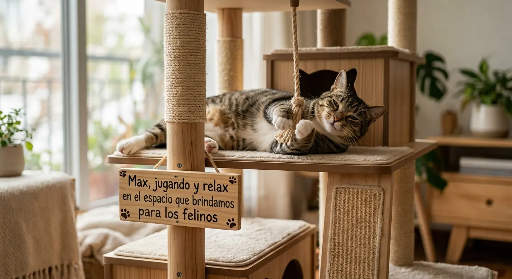
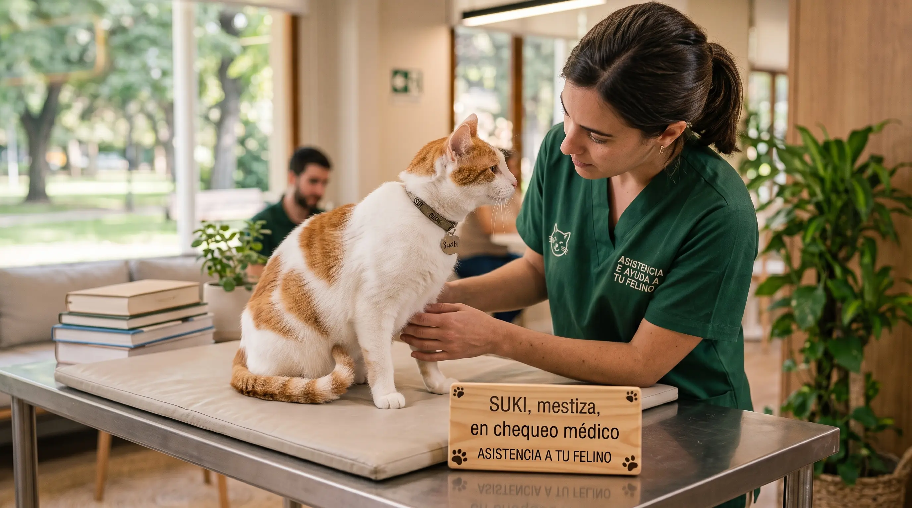
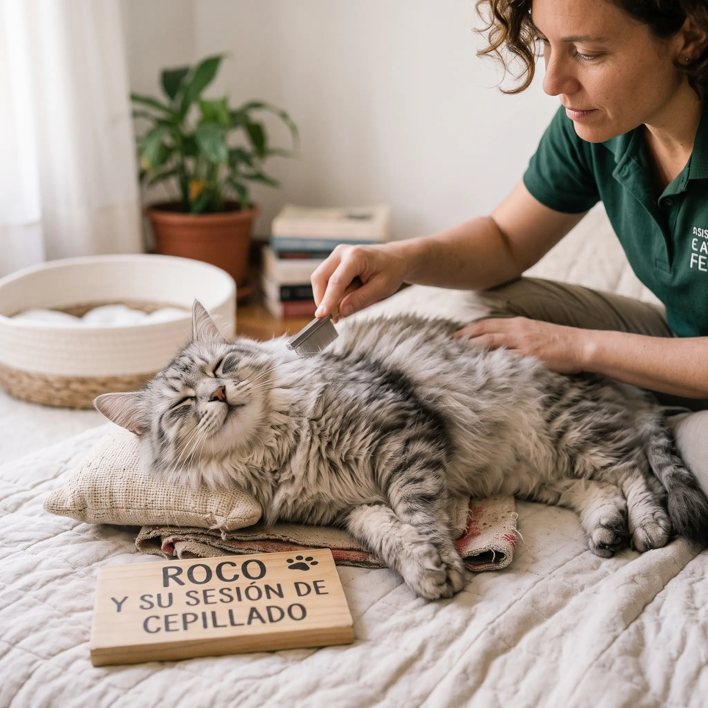

Momentos y Cuidados Felinos
Te compartimos algunas postales de los integrantes de nuestra comunidad y sus rutinas de bienestar.
Milo disfrutando su espacio de juego
 Enriquecimiento ambiental en el hogar.
Enriquecimiento ambiental en el hogar.
Max en el Espacio que brindamos para tu Felino

Momento de relax en el ambiente
Luna en su chequeo preventivo
 Controles periódicos para una vida saludable.
Controles periódicos para una vida saludable.
Suki en su chequeo medico preventivo que Brindamos

Revision preventiva para estar al dia con los sintomas de los felinos
Simba y su rutina de cepillado
 Cuidado diario del pelaje para evitar bolas de pelo.
Cuidado diario del pelaje para evitar bolas de pelo.
Roco en la Seccion de cepillado que te Brindamos

Cuidado del pelaje del felino, lo ideal para mantenerse radiante